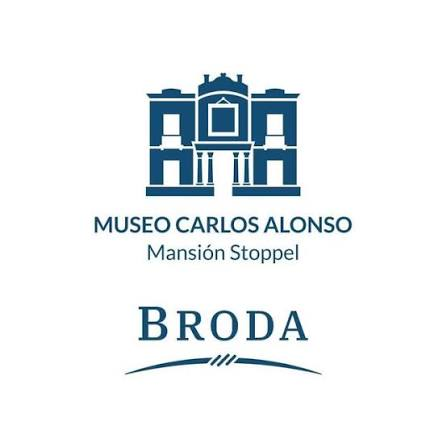
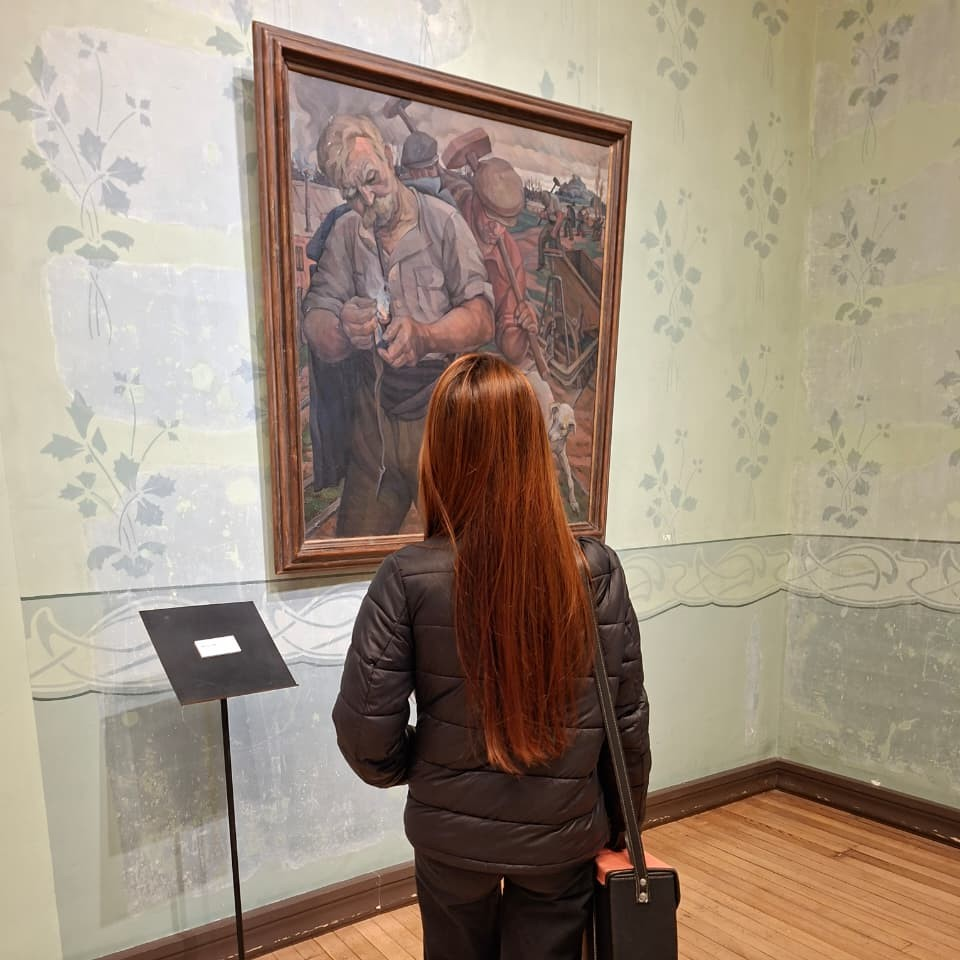
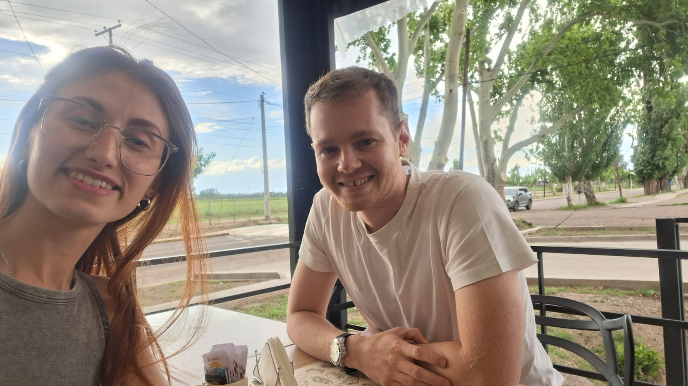

Archivo Provincial de Patrimonio
Registro N° 17-MDZ-2026-LUZ-MONTOROCopiá acá las primeras dos o tres oraciones del cartel real que esté en el museo. Esto hace que durante los primeros cinco segundos de lectura ella piense que efectivamente está leyendo información histórica oficial de la muestra.
Sin embargo, cualquier análisis queda en segundo plano frente a quien está del otro lado del vidrio. Enfrente del cuadro, recorriendo este museo hoy conmigo.
